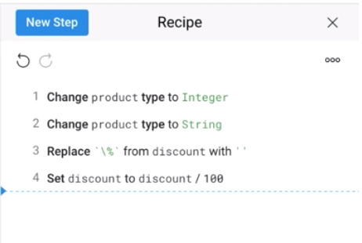
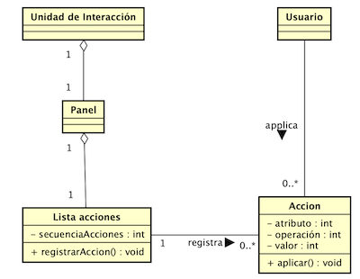

Secuencia de acciones

Problema
- Crear una lista de acciones ejecutadas ordenadas por su secuencia de ejecución.
Contexto
- El usuario realiza acciones sobre los datos (p.ej., filtros) para obtener un conjunto de datos relevante que cumpla con tales condiciones. La cantidad de acciones es larga y su secuencia de ejecución es difícil de recordar para un usuario que desea repetir o modificar la secuencia de condiciones sobre los datos.
Solución
Presenta un panel un listado de acciones aplicadas por el usuario con la opción de editar o eliminar cada acción. Por cada acción realizada en el análisis de datos, agrega un ítem a la lista de acciones. Si aplica, por cada item indicar el número de datos resultandes de aplicar la acción.
Estructura

Patrones relacionados
- Asociación: ninguna
- Agregación: ninguna
- Especialización: ninguno
Ejemplos
En la Figura 2, la sección “Included Filters” muestra el orden secuencial de 4 filtros (Projects, Clinical Defaults, Clinical Significance y GENESIS Allele Counts) aplicados por el usuario a un conjunto de datos de secuencia genética. En este caso, cada filtro tiene la opción de ser eliminado o modificado. La etiqueta 1 resalta el filtro “clínica Significante” al cual se ha pulsado sobre el ícono de lápiz para ser editado. La etiqueta 2 muestra el formulario de las condiciones relacionadas al filtro “Clinical Significance”. El formulario en la etiqueta 2 es diferente por cada uno de los ítems de la lista de filtros.

Fig. 2 Porción de interfaz de la aplicación Gemas.app (Genesis 2.0).[1]
Bibliografía
[2] Trifacta (http://www.trifacta.com/)